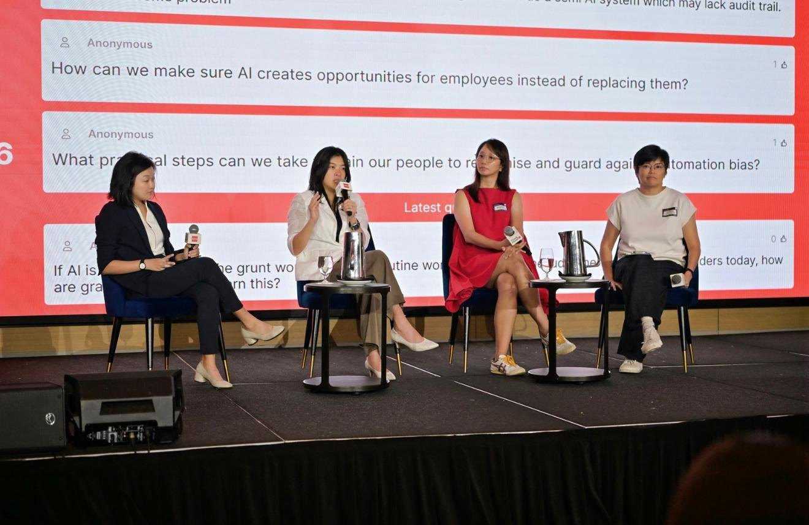

AI Agents in Finance: When Can They Act Alone?
One question decides whether an AI agent can act alone in a finance team. Can you undo it? Here's the rule I gave the ACCA panel, plus three other points from the stage.

My rule for AI agents in finance is one question. Can you undo it? If yes, the agent can do it alone. If no, a human signs off.
Matching the ledger, let the agent do it. Paying the money, a person does that.
I shared this on the AI in Practice panel at ACCA Singapore's Annual Conference, in their 90th year. It was a big honour for someone who isn't an accountant. Here's the rule in full, plus the three other things I said on stage.
When can an AI agent act on its own in finance?
Only when the action can be reversed. A wrong ledger match can be found and fixed. A payment that has gone out is hard to pull back.
That's why the rule works as a filter, not a policy document. Take any task you're thinking of handing to an agent and ask the question. The answer sorts it for you.
I keep it to one question on purpose. A rule people can't remember is a rule nobody follows. One question fits in your head, and you can ask it out loud in a meeting.
Here's how I'd sort a few. Matching the ledger, drafting a report and tagging invoices can be undone, so an agent can run them. Releasing a payment, sending a filing and emailing a client can't, so a person signs off first.
The same question works when you buy tools. Before your next AI rollout, ask the vendor one thing. What can it do that I can't undo?
Why does the bar to judge matter more than the barrier to start?
The barrier to start went down. The bar to judge went up.
Work comes out faster now, so someone has to say "this isn't right." The most valuable AI skill in your firm is the person who can tell when the answer's wrong.
That person is not always the most senior one. It's whoever knows the work well enough to smell a bad number.
Do we still need junior accountants?
Yes. But their job shifts from producing to checking.
The firms that train juniors as reviewers will have the partners in 10 years. In practice, that means putting the agent's output in front of a junior and asking them to find what's wrong with it.
How often should a team review its AI tech stack?
Every quarter. What I used a year ago isn't what I use today.
So check two things. Is your team using the tools they said they'd use last quarter? And did productivity go up?
What else did I take from the conference?
I learnt a lot from the other speakers too.
Manik Bhandari's keynote pushed finance teams to redesign around agents from the ground up, instead of bolting AI onto old processes. I agree with him, and the undo rule is one way to decide where the agent goes.
The Polycrisis Leader panel had Alex Chua, Alvin Chow and Vincent Lim, moderated by Michelle Khoo. It looked at what resilience means when geopolitics, climate and AI pressure hit at once.
What should your team do next?
Write the list first. Which task in your team is a one-way door you'd never hand to an agent? Put those on one side and let agents loose on the rest.
If you're planning a conference, panel or team session on AI in finance, see my speaking page. I'm not an accountant, and I open that way. Then I show the room the parts of AI most of us never touch.
Keep reading: what a 3-hour AI workshop looks like for a Singapore team, or five prompts I use every week.